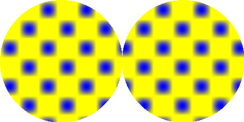

CustomGradient()
Syntax
CustomGradient(@GradientCallback())Description
Sets the drawing gradient to have a custom shape, defined by the given callback procedure.
Parameters
@GradientCallback() The address of a callback procedure to define the gradient. The callback must have the following form: Procedure.f GradientCallback(x, y) ; ; Return a value between 0.0 and 1.0 to define the gradient for the x/y position. ; ProcedureReturn 1.0 EndProcedureThe callback will be called for every pixel that is part of a drawing operation. The callback has to return a value between 0.0 and 1.0 (not a color value) to define the gradient value at the given position.
The x and y coordinate received in the callback are always relative to the upper left corner of the drawing output. The coordinates are not affected by any calls to SetOrigin() or ClipOutput().
Return value
None.
Remarks
By default the value 0.0 represents the current background color and the value 1.0 represents the current front color. Additional colors can be added to the gradient with the GradientColor() command.
This callback will be called many times (for every pixel to draw) so it should be very small and fast to not have a too big impact on the drawing performance.
Note: This command only has an effect with ImageOutput() and CanvasOutput(). The gradient only affects the drawing commands when #PB_2DDrawing_Gradient is set with the DrawingMode() command.
Example
Procedure.f GradientCallback(x, y) ProcedureReturn Sin(x * 0.1) * Sin(y * 0.1) ; will be between 0 and 1 EndProcedure If OpenWindow(0, 0, 0, 400, 200, "2DDrawing Example", #PB_Window_SystemMenu | #PB_Window_ScreenCentered) If CreateImage(0, 400, 200) And StartDrawing(ImageOutput(0)) Box(0, 0, 400, 200, $FFFFFF) DrawingMode(#PB_2DDrawing_Gradient) BackColor($00FFFF) FrontColor($FF0000) CustomGradient(@GradientCallback()) Circle(100, 100, 100) Circle(300, 100, 100) StopDrawing() ImageGadget(0, 0, 0, 400, 200, ImageID(0)) EndIf Repeat Event = WaitWindowEvent() Until Event = #PB_Event_CloseWindow EndIf

See Also
GradientColor(), ResetGradientColors(), LinearGradient(), CircularGradient(), EllipticalGradient(), BoxedGradient(), ConicalGradient(), DrawingMode()
Supported OS
All